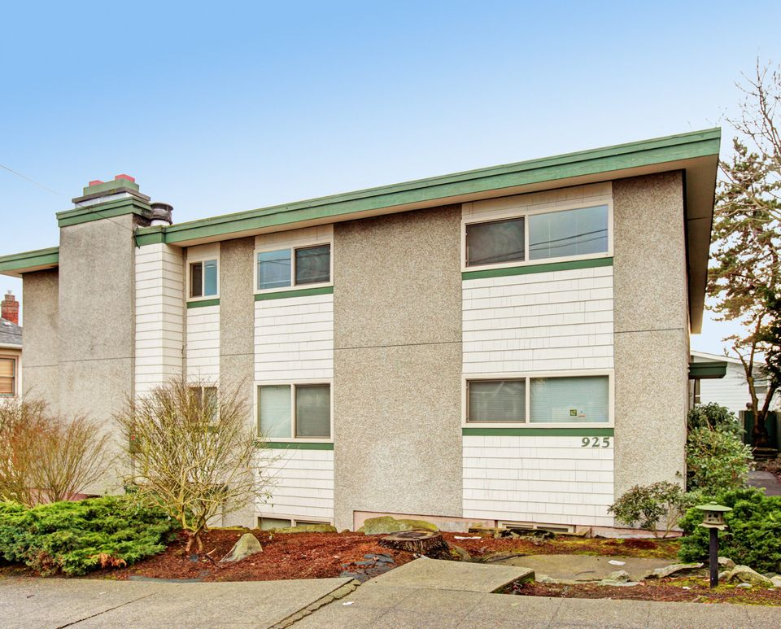

Moorman Properties · 2 buildings
Green Lake
Two mid-century buildings a short walk from the lake and its 2.8-mile path.
The Buildings
Nothing open in the one you like? Call us and ask what is coming up.

Cantrece Apartments
Built 1967A bright 1967 building a stone’s throw from Green Lake. Units have energy-efficient double-pane windows, dishwashers, hardwood floors and decks, and some have wood-burning fireplaces. Easy access to Highway 99, the Woodland Park Zoo and downtown.

Patten Apartments
Built 1963A 1963 building one block from the northwest side of Green Lake, Seattle’s most popular park, with its 2.8-mile path for walking, running and cycling. The Woodland Park Zoo, the shops around the lake and Greenwood are close by, with bus lines to downtown and north Seattle.